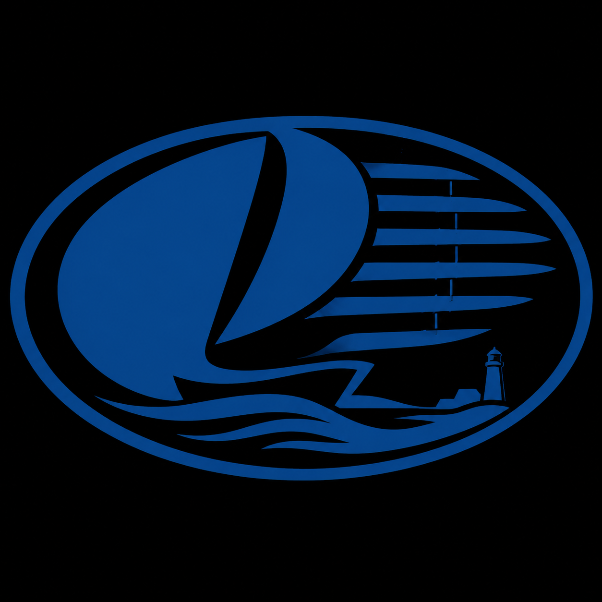

⚓ Hamnen
En betrodd miljö: kurerade webbplatser, lokal sökning och bestående inloggningar. Hamnen är Katselins standardläge.

En webbläsare för dem som vill veta var de är på nätet.
Katselin är en finländsk webbläsare som gör viktiga nättjänster trygga. Den försöker inte ersätta hela internet – den gör vardagens digitala tjänster begripliga och tillförlitliga.
Webbläsaren bygger på motorn Servo. Ovanpå den lägger Katselin till Hamnen: en kurerad och trygg miljö där användaren alltid vet var hen är.
En betrodd miljö: kurerade webbplatser, lokal sökning och bestående inloggningar. Hamnen är Katselins standardläge.
En upptäcktsresa på det öppna internet. Ingen bestående profil, ingen historik, inga kakor. När Öppna havet stängs raderas all dess data.
Användarens egen plats mellan Hamnen och Öppna havet. Webbplatser som du använder regelbundet men som inte ännu ingår i den kurerade Hamnen.
Lagret för betrodda program: Pulloposti, Var är jag och andra Katselin-program som inte behöver hela det öppna nätet.
Katselin är byggd särskilt för dem som inte får tappa kontakten med viktiga digitala tjänster – FPA, Suomi.fi, OmaKanta, skatteförvaltningen och bankidentifiering. Katselin håller användaren i hemmahamnen, där dessa tjänster fungerar tryggt och hittas på ett förutsägbart sätt.
Den passar äldre, barn, anhöriga som hjälper sina närstående, och alla som vill veta exakt var de är på nätet.
Katselin är under aktiv utveckling. Vitlistebaserad surfning fungerar
redan: kela, kela.fi, suomi och
suomi.fi leder till rätt sidor. Servo-motorn förbättras via
Varvet sida för sida.
Öppna havet är ännu ofärdigt och fungerar inte tillförlitligt som öppet surfläge. Hamnen är ändå användbar i utvecklingsversionen.
Läs detaljerad status · Utvecklingsblogg · Filosofi · Utvecklare